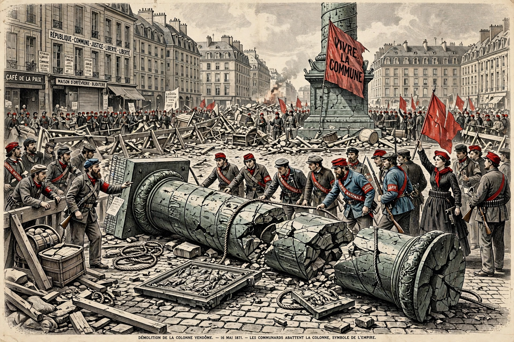

The Paris Commune (French: Commune de Paris) was a radical socialist government that ruled Paris from 18 March to 28 May 1871, after France's defeat in the Franco-Prussian War and the collapse of Napoleon III's empire. It is often regarded as an early example of working-class government and was violently suppressed by the French national government.

| Dates | 18 March – 28 May 1871 |
|---|---|
| Capital | Paris |
| Outcome | Suppressed in Bloody Week |
Sparked when government troops tried to seize National Guard cannons at Montmartre, the Commune was elected 26 March. Measures included separation of church and state, remission of rents, abolition of night baking, workers' takeover of abandoned workshops, and free secular education. Women such as Louise Michel played prominent roles.
Government forces under Adolphe Thiers, based at Versailles, retook Paris street by street during La Semaine Sanglante (21–28 May 1871). Estimates of Communards killed range from 10,000 to 20,000; thousands were deported to New Caledonia. Karl Marx celebrated it in The Civil War in France; later movements debated its lessons.